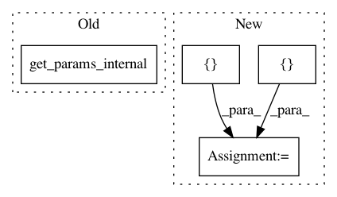

6aa2cf60e7b62c83548a27c80a1f34e38160e0e1,softlearning/algorithms/sac.py,SAC,_init_actor_update,#SAC#,278
Before Change
self.global_step,
learning_rate=self._policy_lr,
optimizer=tf.train.AdamOptimizer,
variables=self._policy.get_params_internal(),
increment_global_step=False,
name="policy_optimizer",
summaries=(
After Change
self._observations_ph)
tf.contrib.layers.summarize_activation(self.embeddings)
actions = self._policy.actions([self._observations_ph])
log_pis = self._policy.log_pis([self._observations_ph], actions)
assert log_pis.shape.as_list() == [None, 1]
log_alpha = tf.get_variable(
In pattern: SUPERPATTERN
Frequency: 3
Non-data size: 4
Instances
Project Name: rail-berkeley/softlearning
Commit Name: 6aa2cf60e7b62c83548a27c80a1f34e38160e0e1
Time: 2018-10-28
Author: hartikainen@berkeley.edu
File Name: softlearning/algorithms/sac.py
Class Name: SAC
Method Name: _init_actor_update
Project Name: rail-berkeley/softlearning
Commit Name: dc2ba0a4b217d154e9e790be30cb0c41994b44d3
Time: 2018-07-31
Author: kristian.hartikainen@gmail.com
File Name: softlearning/algorithms/sac.py
Class Name: SAC
Method Name: _init_actor_update
Project Name: rail-berkeley/softlearning
Commit Name: 9caa24c58689c1d6f3d982f623ceab8f78e7362d
Time: 2018-10-20
Author: hartikainen@berkeley.edu
File Name: softlearning/algorithms/diayn.py
Class Name: DIAYN
Method Name: _init_actor_update